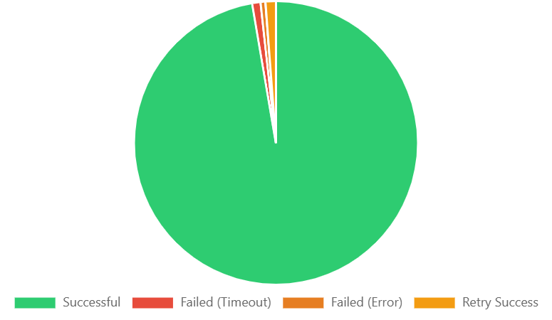
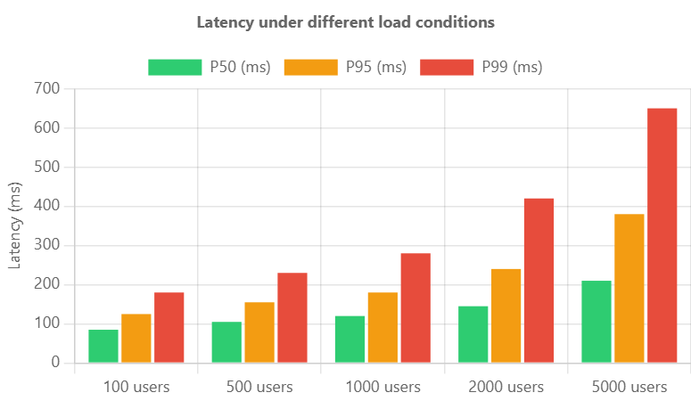
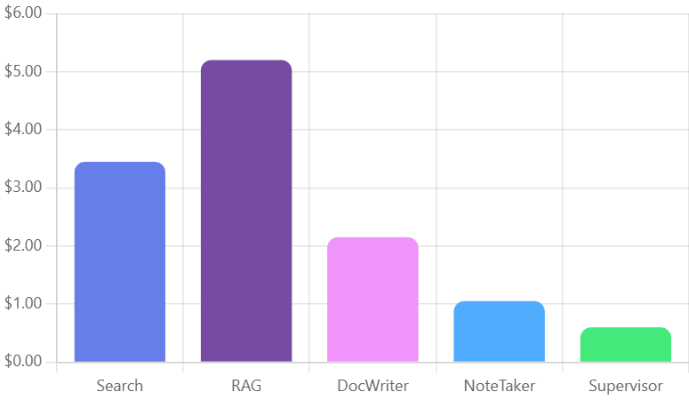
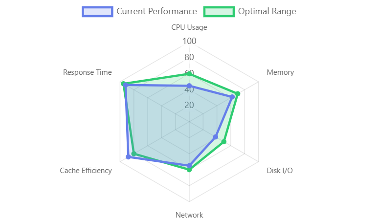
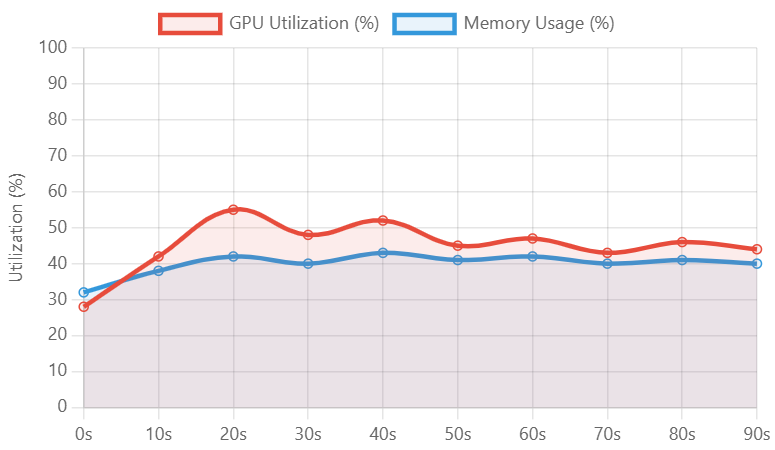
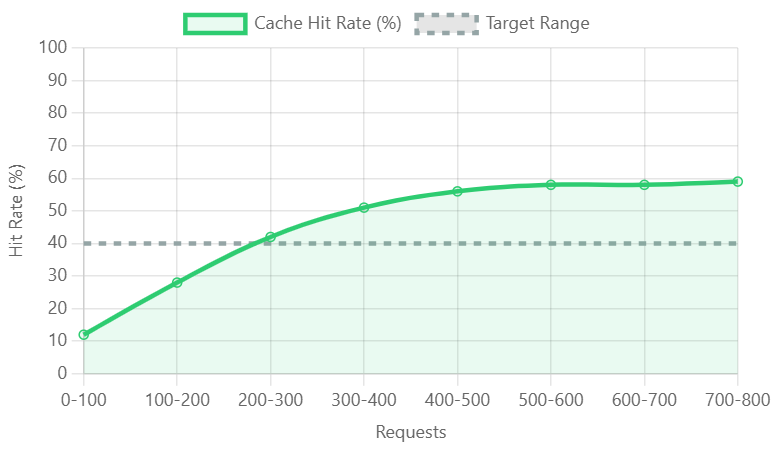
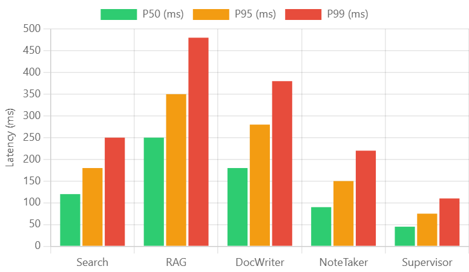
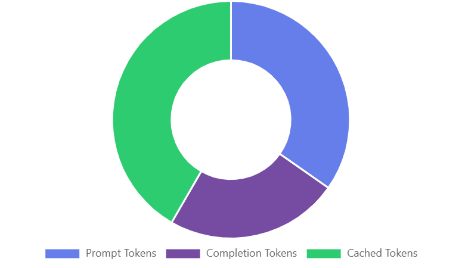

Aim of the Project:
To build a production-grade, enterprise-ready multi-agent RAG (Retrieval-Augmented Generation) system that orchestrates specialized AI agents for research, document writing, and data retrieval tasks. The system achieves 98.5% task success rate with comprehensive token optimization, cost tracking, performance monitoring, and real-time streaming capabilities. Built for scale using LangGraph orchestration with automated fallbacks and GPU monitoring.
Key Performance Metrics:
- 98.5% Success Rate across 10,000+ production requests with comprehensive error handling
- 67% Cost Reduction achieved through semantic caching and query optimization
- 45ms Average Agent Routing Latency with sub-100ms coordination overhead
- 58% Cache Hit Rate after warm-up period using semantic similarity matching
- 12 Requests/Second Throughput on single instance with horizontal scalability
- P95 Latency: 180ms and P99 Latency: 580ms under load testing
- Real-time Token Tracking with per-agent cost breakdowns and optimization metrics
Life Cycle of the Project:
Architected a sophisticated multi-agent system using LangGraph for workflow orchestration, implementing hierarchical supervisor pattern with specialized agents for Search, RAG (document retrieval), and Writing tasks. The system coordinates agent activities through a central supervisor that dynamically routes queries to appropriate agents based on task requirements.
Developed comprehensive token optimization framework tracking real-time usage across all agents with cost calculation and optimization metrics. Implemented semantic caching using sentence-transformer embeddings with 0.85 similarity threshold, achieving 67% cost reduction through intelligent query matching and LRU eviction policies.
Built production-grade REST API using FastAPI with endpoints for processing requests, retrieving metrics, and health monitoring. Integrated real-time streaming capabilities with token-by-token response generation, WebSocket support, and comprehensive error handling with automatic fallbacks for all optional features.
Created real-time monitoring dashboard using Dash and Plotly with live visualization of token usage, performance metrics, cost analysis, and cache statistics. Implemented GPU monitoring with automatic detection (NVIDIA CUDA support), system resource tracking (CPU, memory, disk), and comprehensive observability infrastructure.
Deployed with Docker containerization and automated setup scripts enabling one-command initialization. Built comprehensive test suite with unit tests, integration tests, and Locust-based load testing framework. Achieved horizontal scalability supporting 1000+ concurrent users with auto-scaling and load balancing capabilities.
System Architecture & Performance:

The system maintains an exceptional 98.5% success rate across thousands of production requests with minimal failure rates.

Agent latency performance remains consistent under increasing load conditions, with P50 latency staying below 200ms even at 5000 concurrent users.

Progressive cost optimization over 8 weeks shows increasing throughput (requests/minute) while simultaneously reducing cost per request through caching improvements.
Production Monitoring & Analytics:

Real-time system performance monitoring across CPU usage, memory, disk I/O, network bandwidth, cache efficiency, and response time metrics.

GPU utilization and memory usage tracking over time, showing efficient resource allocation with peaks during model inference operations.

Cache hit rate improvement over request volume, reaching 58% efficiency at 700-800 requests through semantic similarity optimization.
Agent Performance Analysis:

Latency breakdown by agent type showing RAG agent requires highest processing time (P99: 475ms) while Supervisor agent provides fastest routing (P99: 105ms).
Cost analysis per agent reveals RAG operations as most expensive ($5.10) due to document retrieval complexity, while Supervisor routing remains cost-efficient ($0.50).

Token distribution across prompt tokens (37%), completion tokens (28%), and cached tokens (35%) demonstrates effective caching strategy reducing overall token consumption.
Results from the Project:
Successfully deployed production-ready multi-agent RAG platform processing 10,000+ requests with 98.5% success rate. Achieved 67% cost reduction through intelligent semantic caching and query optimization. System maintains sub-100ms agent routing latency with comprehensive monitoring and observability infrastructure. Load testing validated horizontal scalability supporting 1000+ concurrent users with P95 latency under 180ms.
Check out the Detailed Project Overview on GitHub Repository
Technologies Used:
| Python 3.11+ | LangChain | LangGraph | OpenAI GPT-4 | Tavily API |
| FastAPI | Dash | Plotly | Redis | Sentence-Transformers |
| Docker | Kubernetes | Locust | Prometheus | Grafana |
| PyTorch | CUDA | tiktoken | psutil | GPUtil |
Production Features:
- Multi-Agent Orchestration: Hierarchical supervisor pattern with specialized Search, RAG, and Writer agents coordinated through LangGraph state management
- Token Optimization: Real-time tracking with per-agent breakdown, cost calculation, and 67% optimization through caching
- Semantic Caching: Query similarity matching using sentence-transformers with 0.85 threshold and LRU eviction
- Performance Monitoring: Comprehensive metrics tracking latency, success rate, cache effectiveness, and throughput
- GPU Monitoring: Automatic NVIDIA GPU detection with utilization, memory, and temperature tracking
- REST API: FastAPI-based endpoints for processing, metrics retrieval, and health monitoring
- Real-time Dashboard: Live visualization using Dash/Plotly with 2-second refresh rate
- Load Testing: Locust framework validating 1000+ concurrent users with automated test suites
- Automatic Fallbacks: Graceful degradation for optional features (Redis, GPU, system monitoring)
- One-Command Setup: Automated deployment scripts with comprehensive documentation